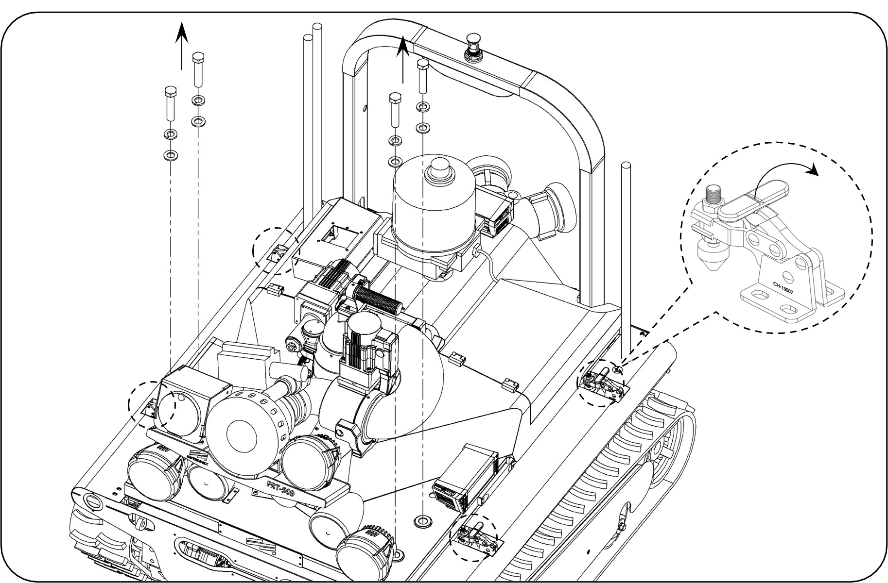
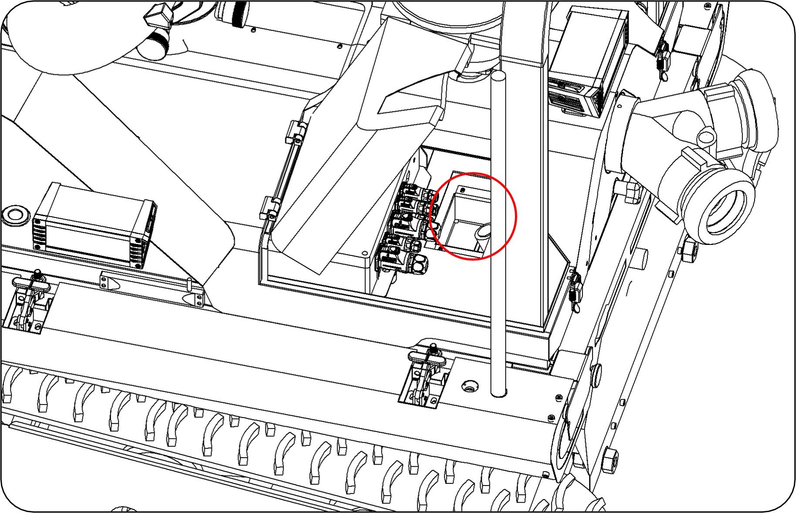
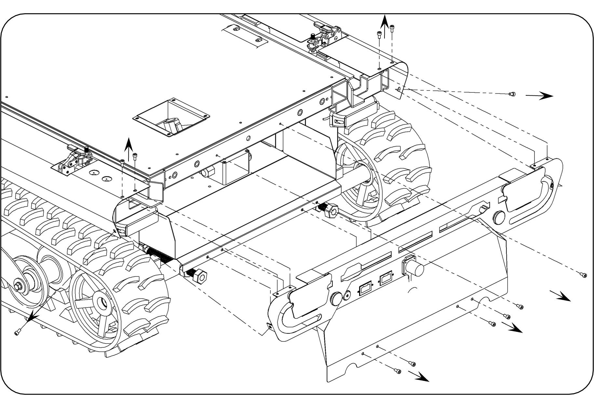
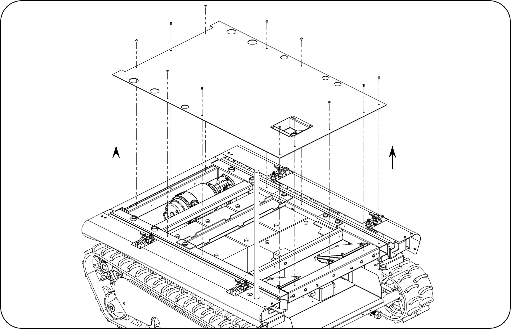
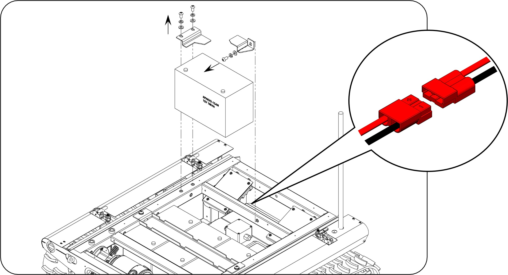
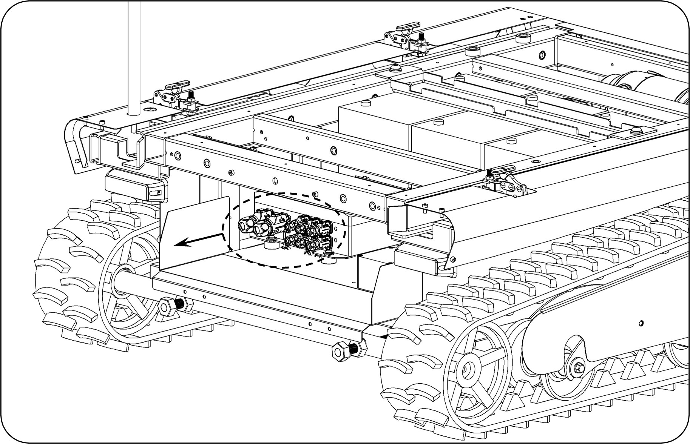
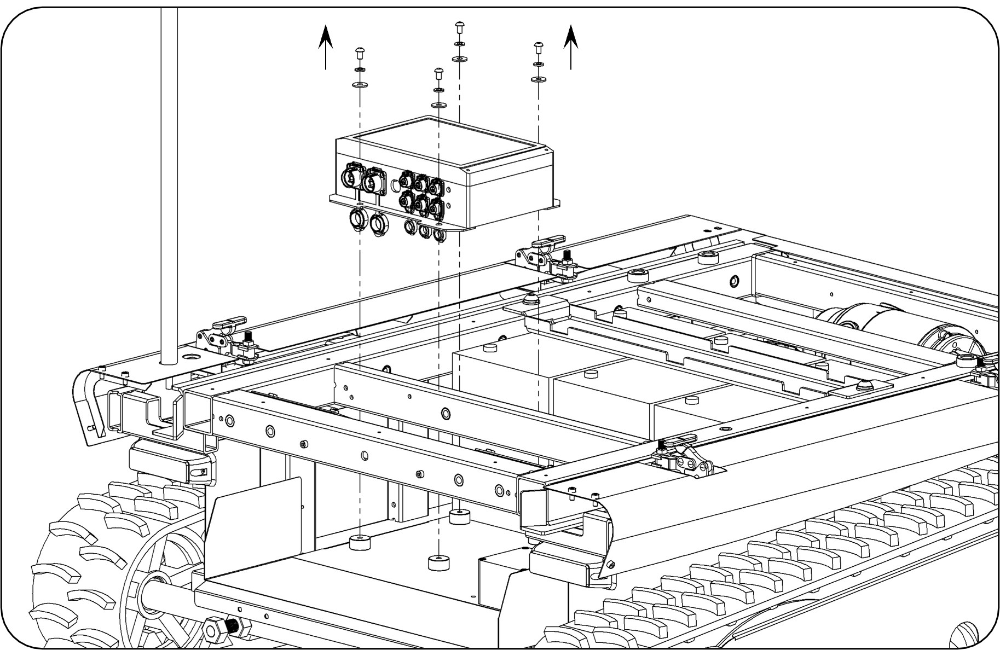
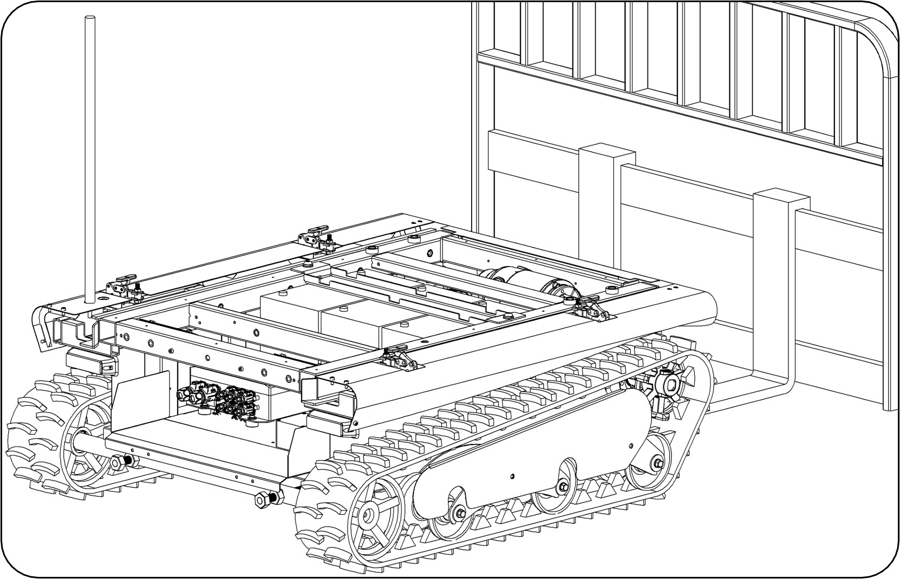
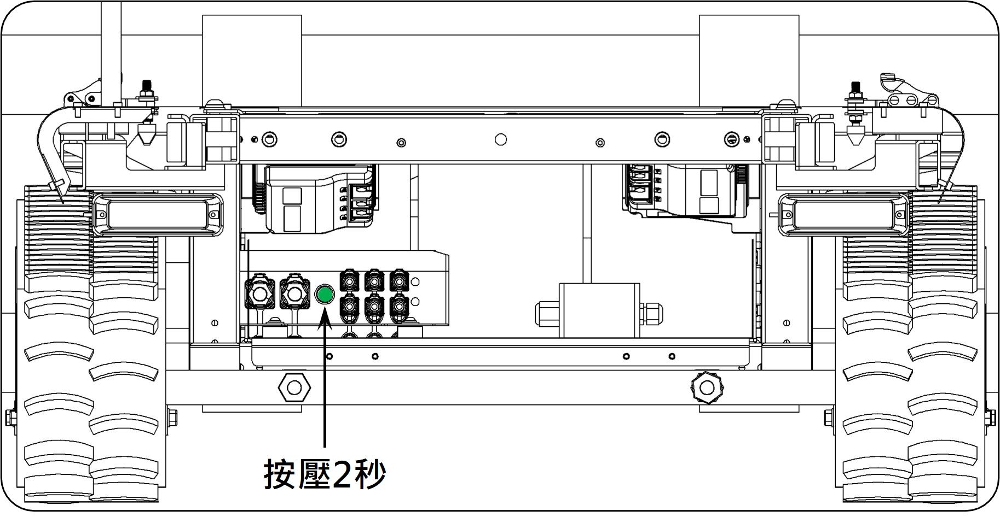

SOP-13：底盤控制盒更換
| 項次 | 類別 | 品名 / 料號 / 規格 | 數量 |
|---|---|---|---|
| 1 | 工具 | 油壓台車、油壓叉車、24號套筒、十字起子、六角板手組 | 各 1 |
| 2 | 零組件 | 底盤控制盒 (19001003) | 1 |
1 / 5
步驟 1：解除上座固定
1. 拆下上座固定螺絲*4…①，解開快速夾具*4 …②。
2. 將砲塔控制器電源線、底盤狀態訊號線收至底盤凹槽處，並將油壓台車放置機器人後方。
(注意：底盤控制線須完全收至紅圈標示之凹槽處，否則上下分離時容易將控制線損壞。)

圖 1：①固定螺絲與②快速夾具位置

圖 2：機器人整體構造與凹槽示意
2 / 5
步驟 2：分離砲塔上座
1. 使用六角板手拆除後蓋板螺絲。
2. 使用油壓台車將砲塔上座移開並放置穩妥。

圖 3：拆卸後蓋板螺絲

圖 4：移開砲塔上座至台車
3 / 5
步驟 3：拆除底板與線路
1. 拆除底板固定螺絲並取下底板。
2. 拔除內部相關連接線組（如安德森接頭等）。

圖 5：底板拆卸過程

圖 6：內部線路拔除
4 / 5
步驟 4：更換底盤控制盒
1. 拆下損壞的控制盒並換上新品。
2. 依照標籤與貼紙指示，將所有線組接頭插回。

圖 7：控制盒拆裝

圖 8：接頭回插確認
5 / 5
步驟 5：回裝、配對與測試
1. 將砲塔上座裝回底盤並鎖緊。
2. 執行遙控器配對（按壓綠色按鈕）並進行動作測試。
(注意：配對測試時務必使用油壓叉車將機器人頂高，防止意外移動。)

圖 9：上座回裝鎖固

圖 10：功能測試與配對完成